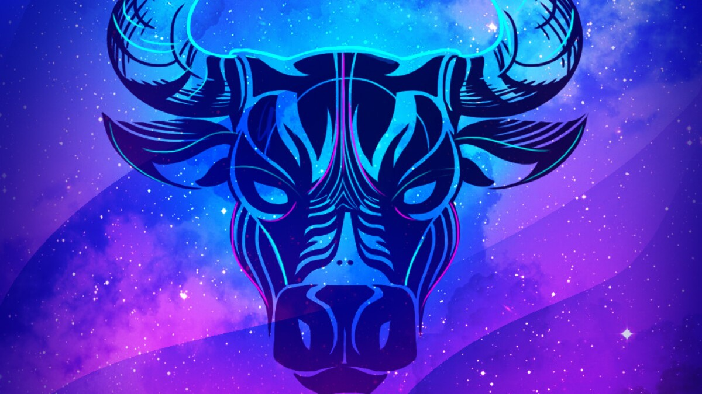
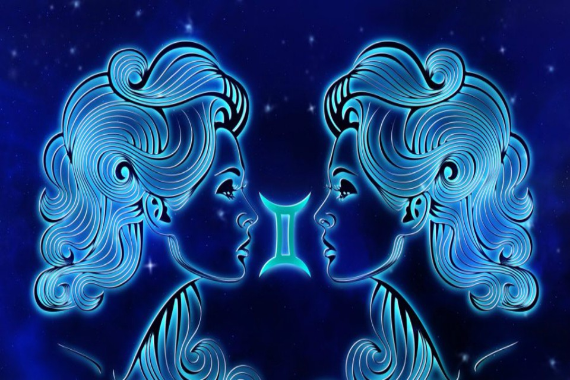

ARIES

Las personas del signo del zodiaco Aries —todas las nacidas entre el 21 de marzo y el 20 de abril suelen ser, según la astrología occidental, entusiastas, enérgicos, valientes, pioneras, independientes, inquietas, con un carácter dispuesto a liderar e incluso, a veces pueden resultar algo tercas e incluso agresivas.
Aries forma parte de los signos cardinales y al mismo tiempo es un signo de fuego; también es el primer signo del zodíaco, precisamente por eso, simboliza el inicio, la creación. Se caracteriza por ser una persona rebosante de energía y entusiasmo; avanzada y aventurera, adora la libertad, los retos y las nuevas ideas. Los Aries son de acción rápida y confían en su poder, por eso no pierden el tiempo pensando en problemas, de hecho, su manera de resolverlos es la acción. Un aspecto negativo de esta actitud, a veces, es la impulsividad y falta de paciencia, además de arriesgarse demasiado. Tampoco soportan equivocarse ni el fracaso.
Son personas independientes y casi sienten obsesión por conseguir lo que desean en la vida, precisamente por eso pueden parecer ambiciosas y frívolas en exceso. Es muy fácil que se sientan ofendidas, y cuando esto sucede, resulta extremadamente difícil hacer las paces con ellas. En sus relaciones personales, Aries suele ser noble y natural; valora y cuida las amistades que tiene, aunque a veces, meta la pata hiriendo la sensibilidad de quienes tiene cerca. Finalmente, Aries acostumbra a tener la libido sexual alta: ama con una gran pasión, pues el sexo para Aries es toda una aventura.
TAURO
Las personas cuyo signo del zodiaco es Tauro todas las nacidas entre 21 de abril y el 20 de mayo suelen ser definidas por la astronomía occidental como pacientes, perseverantes, con una gran fuerza de voluntad, cariñosas, prácticas, respetuosas, amantes del tiempo para sí mismas y de gran corazón. Sin embargo, al igual que el toro que las simboliza, pueden llegar a tener muy mal humor al enfadarse y ser muy rencorosas.
Tauro pertenece a los signos fijos y simultáneamente es un signo de tierra. La proyección del Sol en su nacimiento suele influir para que sean personas firmes, decididas y constantes en varios sentidos. También adoran sentir seguridad, por eso la buscan tanto, es como una necesidad constante en sus vidas. Un Tauro es un ser decidido, pragmático y tiene una enorme fuerza de voluntad. Tiende a las ideas conservadoras, y como le gusta tanto la estabilidad, sus ideas son fijas no hay manera de convencer a un Tauro de algo que vaya en contra de sus principios o de lo que piensa y siente, así que la terquedad es otra de sus características más evidentes.
Tienen una gran capacidad para evitar conflictos y disgustos, sin duda prefieren resolver sus problemas con pragmatismo; también tienen buen humor. Sin embargo, cuando pierden los nervios, son capaces de montar en cólera y mostrar un genio terrible. Los Tauro son personas sensuales que idolatran la belleza, la fidelidad y el cuidado; no obstante, el punto negativo es que tienden a la posesión. Su carácter romántico hace que disfrute sintiendo el amor de su pareja el sexo para Tauro es en última instancia la manifestación de la entrega que siente por la persona que ama.
GEMENIS
Las personas Géminis quienes nacieron entre el 20 de mayo y el 21 de junio son definidas por la astrología como ingeniosas, inteligentes, generosas, independientes, creativas, vitales, con mucha capacidad de resiliencia, con ganas de aprender y sobre todo, abiertas a las nuevas experiencias. Pero como no todo puede ser bueno, y debido a las dos caras de su signo, pueden sufrir cambios de humor además de caer fácilmente en continuas contradicciones.
Géminis es un signo mutable que forma parte del elemento aire; como signo de los gemelos, su carácter es doble y bastante contradictorio por complejo. Por una parte, es capaz de adaptarse con facilidad y rapidez a todo, pero por otra puede resultar hipócrita. Su distintivo común es la comunicación y el ingenio. Los Géminis son personas inquietas que empiezan nuevos proyectos y retos con mucho entusiasmo, aunque con demasiada frecuencia les falta la constancia necesaria para realizarlos. Tienden a pensar en la vida como un juego y buscan la diversión y aventura en todo lo que hacen; tienen el egoísmo y la imaginación propia de la infancia.
También tienen fuerza y vitalidad, además son seres inteligentes, con facultad de expresarse de modo eficaz para deleitar, conmover o persuadir (según convenga) a quienes prestan oídos a sus palabras. Asimismo, son cariñosos y disfrutan como nadie con lo extraordinario y la novedad: cuanta más variedad en su vida, mejor que mejor. En el plano sentimental se mueven como pez en el agua y vuelven a demostrar su doble naturaleza: por un lado se entregan sexualmente, pero por otro rechazan el romanticismo y pierden interés con facilidad una vez conquistada su pareja.